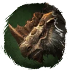
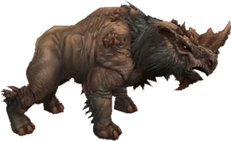

Открыть в интерактивной вики →

| Уровень | 80 |
|---|---|
| Прокачка | есть |
| Ранг в стае | 10 |
| Здоровье | 2600 |
| Мана | 1000 |
| Выносливость | 1800 |
| Статистика | Уровень: 80, ранг: 10, здоровье: 2600, мана: 1000, выносливость: 1800 |
Цена
9kk  Золото
Золото
ЗолотоГде взять
Покупается в Клетке гильдий 3
Выкуп
Выкуп за смерть:
10х Платина либо откат 4 часа
Платина либо откат 4 часа
10х
Платина либо откат 4 часаНавыки


Доп. информация
Требуемый уровень: 80
Цена: 9 000 000 золота
Покупка: III гильдейская клетка
Может получать опыт — ДА
Описание
 | Лохмач — зверюга, которую исключительно трудно победить. Разогнавшись, он неудержим. Если противник не поддастся панике, зверь разобьёт его броню и свалит его с ног. Отлично подходит лучникам и магам. Атакует физически и ментально. Использует: Рёв, Удар головой, Таран, Укус, Защита. | |